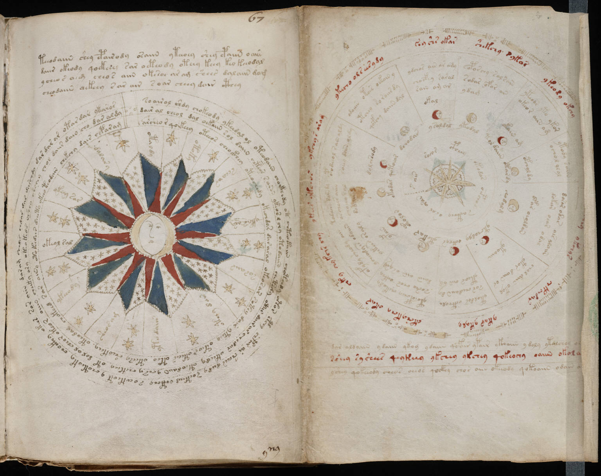

f67r2
1ykchs ykchos2ykchyr aram3ykecho ols eesydy4soy shr okar5shekchy *ykor6ykeody okchy7dchetdy8rfchykchey ykchys9chkchdar10ykar ykaly11lkshykchy okar12chky chykchr chy13todaiin dain dy14orchoer aiin15choeey sar16dacsa*ry*17opodchol dain aldy18sochy doiin oldy19odaiin otocs oekain y20otchoy soraiis dy21qofchy daiin dal22ydchos ain ar amy23chocfhy saral24rain am or25eoporchy salsoiin26sodar ofor ar27ydag28yteoor yto ykor29okeor aiin am30ytody saiin31ochol olol32dorar odar ais aloiin33dakan osar odal34chol daiin okol35ytor daiin or36otoldos octhole37sor chedaiin dy38yteos oiin om39ytoeopchey chekody40soshe chos ockhy41daiin aiin os yrl42ofydy sheody aiin43ycheody es odaiiin44yekees oraly45dylchsody46okal47okain am48opcholdy49dfar oeoldan50ytoaiin51yfain52okadar53qotoear54dchodar55ysaldal56ytodal57tol daiin58otardy59chodalg60ytchodyy61octhys62ytokar63otolor64s air65soeor66cpheey67okodas68oepchol69sacthhy70osar71oran72dar aldaiin ydaiin qkoy ydaiin qofair ypair ykoaiin ydoly ytalchos oly okey73sshey syshees qeykeey ykchey ykchey qokeochy oaiin okalar ol74yshey qokeeody cheos oeeos qockhy chos aiin okeeody qokoaiin odaiin ar oirsg
